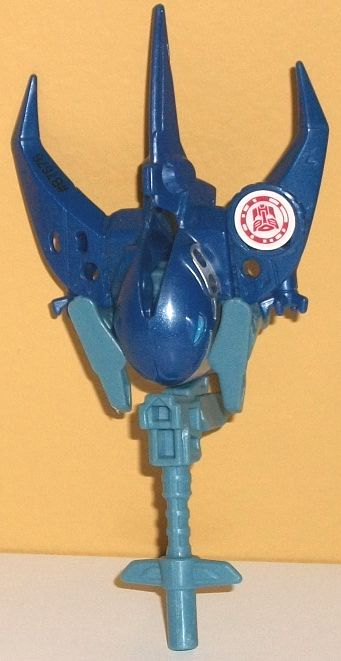
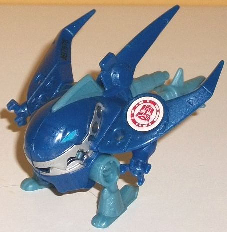
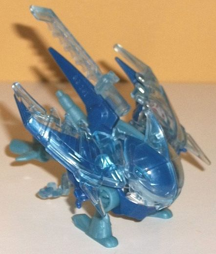
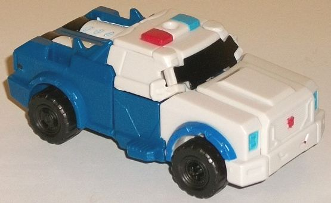
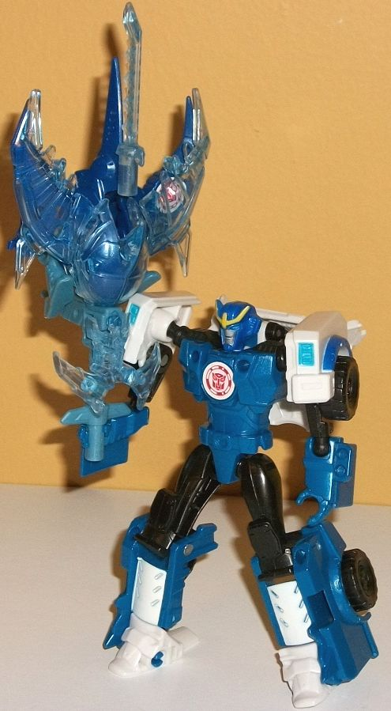
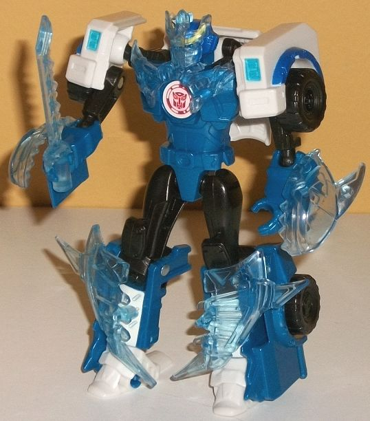

Sawtooth
Sawtooth



Allegiance:
Autobot
Size
: Mini-Con
Difficulty of Transformation
: Very
Easy
Color Scheme
: Dark milky semi-metallic
blue, pale milky teal, transparent pale blue, and some silver and moderately
light electric blue
Individual Rating
: 5.0
I'm gonna start with
Sawtooth robot/beast mode, as so many of my comments on his weapon stem
from this mode. Sawtooth's robot mode is... interesting, in some ways good,
in some ways bad. He looks kind of like a superdeformed manta ray creature
with little bitty legs and arms. He's got a big face with a fierce/conniving?
grin, with two long, flat wings coming out of the sides of said face, and
a longer, skinnier tailfin coming out of the back of the head. There's
also a long peg handle poking out waaay back there behind his head, below
the tailfin. I'm not sure if thys is supposed to be another fin or just
a big piece of kibble, given the uniqueness of this mode. I guess I'll
be generous and say it's supposed to be another long fin or something.
Unlike most Mini-Cons in robot mode, Sawtooth actually has articulated
appendages-- each of his arms are tiny and can't even come forward far
enough to get in front of his enormous mouth, but they have interesting
four-pronged claws with a circular bit in the middle that looks kind of
like each hand has a blaster in it. His legs are only slightly longer,
just enough to lift his huge head above the ground, with long heels to
keep him stable despite being so back-heavy in this mode. His arms can
move side-to-side where the connect with the underside of the wings, while
the legs can move back-and-forth at the hips where they affix to the bottom
of the jaw. It's not much articulation, but it's more than most Mini-Cons.
Sawtooth's mold detailing is mostly centered around his face and huge maw,
but he has a few robotic details elsewhere, like the stylized "bolt" and
line on his tailfin and some basic lines along his main wings. His color
scheme is pretty basic, being a Mini-Con-- it's almost entirely a dark
milky semi-metallic blue (with a bit of glitter in it) and a pale milky
teal. The two colors contrast and complement each other on a basic level,
and certainly are fitting for a sea-type creature, though it's not exactly
eye-grabbing, either. He's got some silver paint on his many teeth, and
some electric blue, but that's it for paint.
Sawtooth's weapon mode
is a trident. All you do is just rotate down the handle in front of is
head instead of behind it for the robot mode, and then flip out the little
peg in the back of the handle so that a Transformer can peg Sawtooth into
the side of the arm if they have an available port, instead of his holding
him by the end of the handle. The overall silhouette certainly matches
a trident, but man those arms and legs really stick out like sore thumbs--
the latter in particular. Despite this mode being so similar to Sawtooth's
beast mode, I'd say it would be fairly forgiveable if it wasn't for that,
and that his head details are still pretty visible. As it is, if you glance
at it this is a pretty decent trident, but the more you look at it the
more it kind fails in the middle portion.
Sawtooth's armor parts
are pretty cool. The best parts are the two halves that fit over his head,
giving him a "helmet" of sorts and even more teeth, while he has a piece
that fits over the top of each wing, making them more spiky and dangerous-looking.
An obvious saw-dagger sticks onto the top of his tailfin, but it adds some
more point-iness to the mode, so it still looks pretty good. The helmet/chest
piece for Strongarm kinda just hangs below his butt in an awkward manner
and is the weakest piece obviously, but that's the price you pay for armor
pieces being able to fit both figures in a pack. In beast/robot mode he
definitely looks fiercer, but in weapon mode these pieces also look pretty
fierce, making the trident even pointier and more jagged. The Strongarm
chest/head piece sticks out even more in weapon mode, though, just hanging
out there in front of the handle. The colors of the armor pieces are a
transparent pale blue, which certainly isn't bad, but doesn't really add
anything to the color scheme-- it's too much like a transparent version
of the lighter of Sawtooth's main two colors.
 Strongarm
Strongarm



Allegiance
: Autobot
Difficulty of Transformation
: Easy
Color Scheme
: White, black, moderately
dark milky semi-metallic blue, transparent pale blue, and some silver,
dark periwinkle, yellow, red, and moderately light electric blue
Individual Rating
: 8.6
Proportionally, Strongarm's
police SUV mode looks pretty good for her Battle Pack version. It's nice
and bulky, with a lot of straight lines and no robot mode extras to speak
of. Most of mold details are there, like the angular front grill and headlights;
police sirens; all the windows, treads on the tires, and the ridged bits
above the tires; the back end with the taillights; and the RID2015-usual
divots on the top of her back end. That said, mold details are oddly missing
for her side doors. What is really a shame about this mode, however, is
a combination of the color breakup and the paint apps, which is unfortunately
the case for nearly all the RID2015 Strongarm toys. The interplay of the
various blue and white areas on her is just too complex on the show for
Hasbro to replicate it adequately with paint apps within their budget,
apparently. The front and top of this mode is mostly white-- too much so--
while the back end and the bottom middle section are mostly a dark milky
blue. The shade of milky blue plastic used for Strongarm is a pretty neat
shade, however-- though it's milky, it has a bit of glitter in it to give
it a semi-metallic sheen. There's a tad of blue paint used on the front
section-- over her wheel covers, namely-- but it's a dark periwinkle and
visually is a bit off from her plastic blue. There's also some blue on
her headlights and on a third of her siren, but it's a fairly light electric
blue. It's a nice shade in and of itself, but against white it's a bit
too light, and doesn't give off quite enough contrast in my opinion. There's
some white on the rear top sections that become her lower robot legs, but
the white paint isn't thick enough-- the dark blue plastic "bleeds through"
a bit. There's red on another third of the siren and on the little Autobot
symbol on her front grill, but that's it-- it doesn't contribute much to
the color scheme. There's black paint on her front window, but sadly that's
it; her rear and side windows are completely unpainted, and look awful
without it. Combine that with the lack of paint on her grill, or the lack
of blue lines on this mode (especially the big one that should be down
the center of her hood) or white lines on the dark blue parts, and it makes
her look unfinished color-wise-- and it's a real shame, as mold-wise this
mode looks pretty darn good.
The transformation to
Strongarm's robot mode is a slightly simplified version of her
Warrior
class version
. The back half unfolds to become her legs and feet, while
the sides fold out to become her shoulders and arms. Meanwhile, the center
portion of the front hood folds behind her back, and her side windows fold
back a bit to form little "wings" behind her shoulders. Mold-wise, this
is another improvement over her Warrior class version-- she doesn't have
NEAR the back kibble on this version. From a frontal view, only the top
of her grill sticks out behind her head a bit, and the wings formed from
the side windows are so small they help accentuate her silhouette and don't
get in the way of articulation much. From a side view, the back kibble
sticks out a bit more as it doesn't all fold completely flat against her
back, but it's still pretty minimal. Meanwhile, her core robot proportions
are fantastic, with better-proportioned lower legs that aren't quite so
bulky compared to the upper legs. Her shoulders are bulky without being
too finicky, and her lower arms have some definite kibble hanging off the
bottoms (they're the side panels of the vehicle mode), but other than that
they look solid and better than the rectangular lower arms of the Warrior
mold. Her headsculpt is also spot-on, with her Prowl-like headcrest, side
vents, and slight lips on her noseless face. Her chest is the only segment
that looks better on the Warrior-- it doesn't stick out enough/isn't bulky
enough to be show-accurate here, though part of this can be chalked up
to the fact it has to accomodate armor. Given the more visible addition
of black in this mode to the upper legs and shoulders-- and the more easy
visual breakup of the dark blue and white pieces-- her color scheme is
better in this mode overall, and more varied, despite the fact that not
many new paint apps can be seen. Really the only new paint apps are on
her face-- the yellow in the headcrest, the silver on the face, the electric
blue on her eyes, and the dark periwinkle paint around the rest of her
head. Unfortunately her chest is completely unpainted, which given all
the mold details on there, like the compacted faux vehicle parts and belt
across her waist, is an absolute crime and looks bad. The other mold details
for her robot mode-- such as the ridges on her hands, and the boot-like
feet-- are all here and look good, despite being unpainted. For articulation,
Strongarm can move at the neck, shoulders (at three points), elbows, hips,
knees, and back-and-forth at the ankles. I wish she had waist rotation,
but otherwise that's pretty good for this size of a toy.
As with the other Weaponizer
Mini-Con Battle Pack, Strongarm comes with armor that is mostly used with
the Mini-Con, but can be attached to her robot mode as well. The wing pieces
from Sawtooth peg into the front of her lower legs, forming some nice curved,
spikey pieces of armor that contrast well with the otherwise rectangular
shapes down there. The head-half armor pieces peg into her lower arms,
forming nice arm guards. She has a small saw-dagger weapon (appropriately)
that can be held in her hands, and there's also a combo chest/head armor
piece that has some wicked knight-like armor details in it. Although they
add to her look some, I wish they were a different color than pale blue;
that color doesn't contrast or complement her others that much.
Reviews by Beastbot